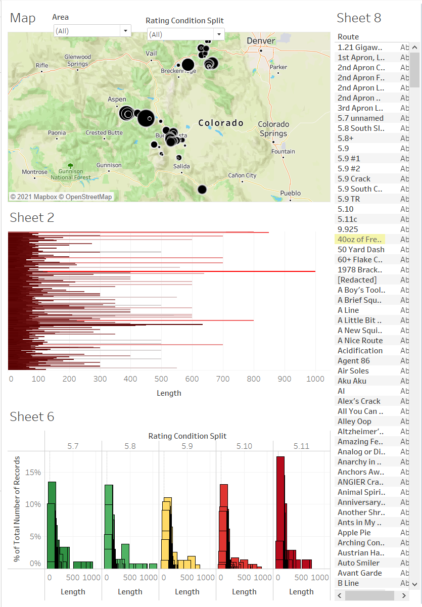
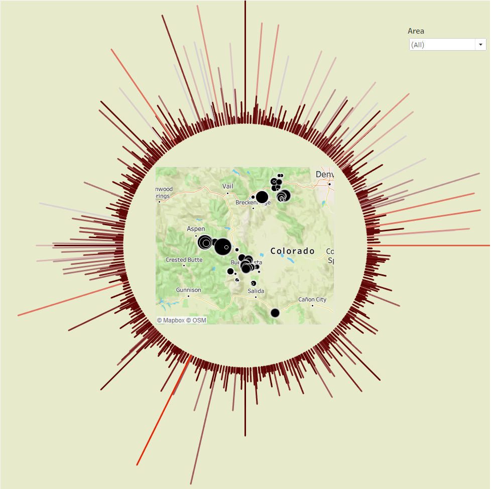

Project Documentation
Project Background
Rock climbing is an increasingly popular sport, especially with its introduction in the 2020 Olympics. While current
tools exist to explore rock climbing routes and areas, it can often be difficult to get a 'big picture' view of a crag or larger area while
still viewing information about individual routes. Finding locations to climb can be a daunting task for any climber, especially if they
are new to the sport. This project utilizes Tableau to create an interactive dashboard using data from Mountain Project.
Design Process
The visualization process was an interative project that was completed in steps. Tasks included deciding what was important information for a
rock climber to know about routes/crags, how the actual Tableau dashboard should look, and determining the best way to display the information in a way that is both
simple and appealing to users.
Initial Designs
Design 1
The initial dashboard featured a map of the routes plus information that was determined to be important to a viewer. This information included
the route name, location/length(ft), and difficulty ratings. Initial design iterations focused on finding what information is critical to the viewer.
Design 2
The second design features the map of the routes within a circular bar chart of route heights. When hovering over each bar, route information
such as length(ft)/location/name is visible in a tooltip. A functionality to filter the routes by area was included. This design included the groundwork for the final
design. We created this design with the goal of making a dashboard that is appealing and easy to use.
Final Design
The final design is the design on the main page of the website. This still features the map and radial bar chart, but includes many other
visualizations of features of the rock climbing routes. The filters are on the top of the visualization to make it easy for the user to find, and the other items are displayed
around the graph. A feature with stars was added to show the top rated routes based on the filters the user applies to the visualization. The colors were also adjusted to
reflect the colors of the Colorado state flag. Tooltips show additional route information after hovering over the radial graph, and clicking on 'More Info' on a route
name will take the user to the Mountain Project webpage for the route, which shows real pictures and information on how to reach the route. Future
changes could include adding more routes from other states and adding filters by state, or maybe even country.
Design Choices
- The radial graph and map are the focus of the visualization. This was placed at the top left of the image since English-readers
read left to right. - The radial bar graph was chosen as a fun, unique way to demonstrate route lengths (ft). This was placed around the map of Colorado
to draw attention to the map. The unique feature creates the focal point of the visualizationn. - Filters were placed above the map to make them easy to locate.
- The green background color was chosen to match the map and to create a rustic outdoors feel.
- The colors of the radial graph, other charts, and borders were the colors of the Colorado flag. These bright primary colors
pop against the background color of the dashboard. - Borders were placed appropriately to highlight the visualization and separate the filters from the charts.
Colorblindness Accessibility Testing
Colorblindness testing was conducted for accessibility purposes. I used a web-based filter by Toptal that allows a user to type a URL and filter
with a color filter to test for accessibility. Colorblindess does not affect the functionality of the map - the locations of the rock climbing routes still stand out
against the map background, and the rest of the visualization still pops from the background. The visualization and webpage are colorblind accessible.
Visualization Revelations
The visualization gave many insights to the nature of rock climbing in Colorado. Some things that were shown were to be expected. For example,
routes around Mount Evans, a massive mountain, were longer in length and were shown to have more pitches than other crags closer to towns. Other revelations were
more surprising, such as noticing that some areas had a combination of sport and traditional route development, and others were strictly traditional. A climber with
equipment for sport climbing routes would be incredibly disappointed to arrive at a rock climbing area and find out that the area only had traditional routes, which
requires entirely different equipment.
The visualization helped us answer the following questions:
- Can we make a more user-friendly way to browse rock climbing routes? Yes! The visualization accomplishes the main goal of creating a dashboard for rock climbers to explore Colorado rock climbing.
- Do different areas of Colorado feature different route types? Yes! For example, Alpine Rock consists of almost entirely traditional routes, while someone would want to visit Buena Vista for sport style routes.
- Can we make it easier to avoid unsafe or dangerous routes? Yes! We made a filter that makes it possible to adjust the 'safety' of routes, allowing the user to filter out routes deemed unsafe.
- Where are the most challenging crags (areas)? Independence Pass has the highest number of difficult routes (5.11) compared to other areas.
We also discovered some surprising facts. It was interesting to see that many of the routes deemed unsafe by mountain project users (Safety = PG13 or R) were typically
traditional routes. It appears that newer climbers may want to begin with sport climbing to build skills prior to advancing to more dangerous traditional climbs.
The visualization accomplished the overarching goal of creating an interactive visualization that allows both climbers and non-climbers to explore the nature of rock climbing
in the state of Colorado.
References
- Mountain Project: https://www.mountainproject.com/route-guide
- Murray, Scott. Interactive Data Visualization for the Web. O'Reilly, 2013.
- Color accessibility: https://davidmathlogic.com/colorblind/#%23B8E2FF-%23F0AAA5
- Sidenar nav design: https://www.w3schools.com/howto/howto_css_fixed_sidebar.asp
- Color accessibility: https://www.toptal.com/designers/colorfilter/
- Radial bar chart: https://www.thedataschool.com.au/jethro-chen/the-radial-bar-chart-in-tableau-tutorial/
- Radial bar chart: https://www.thedataschool.com.au/mipadmin/how-to-create-a-radial-bar-chart-in-tableau/